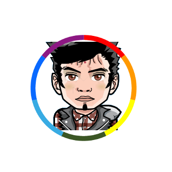
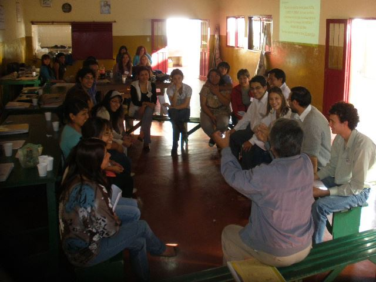

tecnomati.co
Cooperativa Informática
Anahi Aramayo
@anahi_aramayo
@anahi_aramayo
Joel Pelaez
@joelpelaez
@joelpelaez
Nuestra breve historia
Somos un grupo de compañeros y amigos de la U.N.Ju.

Emprendimientos
individuales...
Utilizando tecnologías y herramientas informáticas.
- Empresas unipersonales
- Mantenimiento y reparación de PCs
- Apertura de Cyber Café
- Participación en Proyectos
- Clases de apoyo y tutorías
Nuestra organización
- Consejo de Administración.
- Gerente de Ventas, Contador y Síndico.
- Líderes de Grupos de Trabajo.
- Asociados responsables de una tarea.
Capacitación Constante
- Auto-didactas
- Capacitaciones e-learning
- Capacitaciones formales.
- Brindamos capacitaciones.
- Participamos en las distintas Eventos y Jornadas.
En LA QUIACA - Cooperativa y Tecnologias Web
En LA QUIACA - Cooperativa y Tecnologias Web

En SAN PEDRO - Cooperativa y Tecnologias Web

Logros Obtenidos
Repercusiones en los medios
Miembros del Facttic